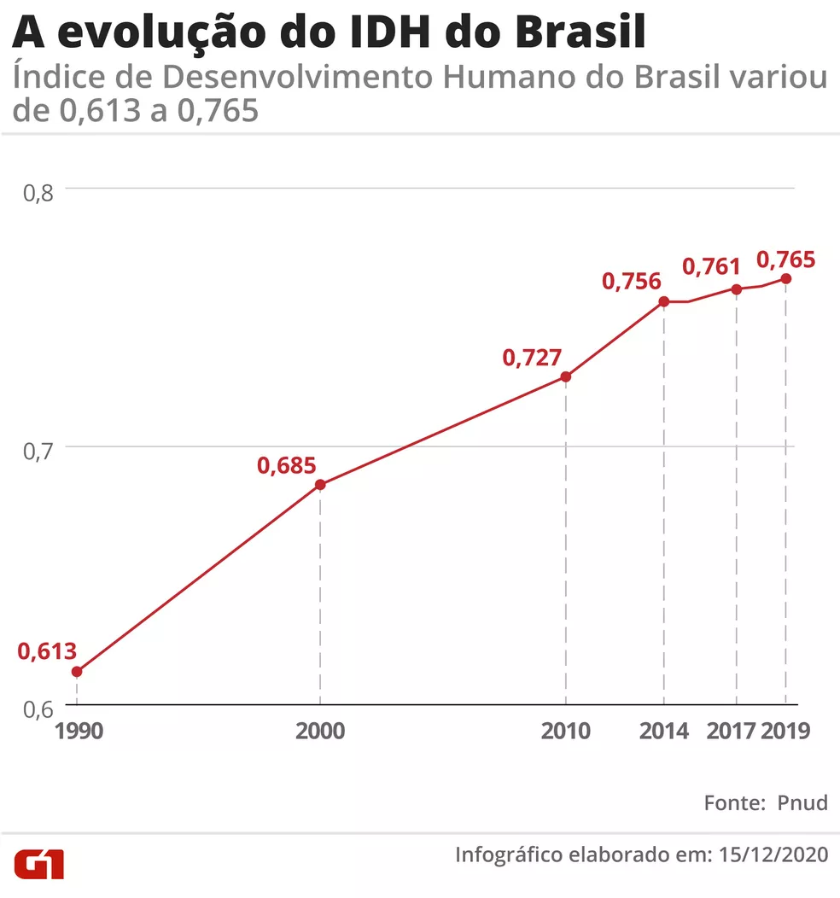

O que é Desenvolvimento Econômico?
É um assunto discutido pelo Campo da Macroeconomia. Caracterizado pela melhora no bem-estar geral da população, destaca o aumento da qualidade de vida e material e é quantificado por indicadores econômicos, como o Produto Interno Bruto (PIB) e o Produto Nacional Bruto (PNB).
No início do século XX diversos economistas entraram em discussão a respeito do conceito de desenvolvimento econômico. Em um primeiro momento, desenvolver a economia era sinônimo de aumentar a produção e a renda referente à população de uma região. Porém, após alguns anos foram acrescentados fatores como a melhoria da qualidade material e do quadro social geral de um país. Assim, só pode ser considerado desenvolvimento econômico o progresso conjunto e que alcance todos os campos de uma sociedade.
Por vezes, devido às características em comum, é confundido com o crescimento econômico. No entanto, o desenvolvimento econômico abrange uma área muito além disso, já que é um conceito ainda mais profundo que não pode ser mensurado apenas pelo PIB e pelo PNB, visto que é o caso do crescimento. Assim, é necessário entender que sua ideia está baseada na harmonização entre o crescimento da economia e as necessidades públicas, isto é, só há desenvolvimento quando a melhora da qualidade de vida e material aumenta em função do crescimento econômico. Em síntese, o desenvolvimento econômico pode ser entendido como um fator indispensável à progressão de uma sociedade civil, tornando-o uma prioridade entre as autoridades do governo. É notório o alto nível de rigorosidade demandado por esse assunto, portanto, é de caráter unânime que seja tratado de forma mais que responsável.

Métodos de Classificação do Desenvolvimento Econômico de um País
IDH (Índice de Desenvolvimento Econômico): No IDH (índice de Desenvolvimento humano), é possível identificar o desenvolvimento humano de uma região, usando as informações sobre escolaridade, expectativa de vida e renda per capta de um número delimitado de pessoas. O valor variante do IDH é de 0 a 1, quanto mais perto, mais um pais é desenvolvido, por exemplo, o Brasil em 2020, possuía um IDH de 0,765.
Índice De Gini: Com índice Gini é possível medir de que forma a renda pela forma como é distribuída para a população. Quanto maior é o Gini, mais desigual é a distribuição de renda de uma nação. Também em 2020, o índice Gini do Brasil apresentou-se na casa de 53,9.
